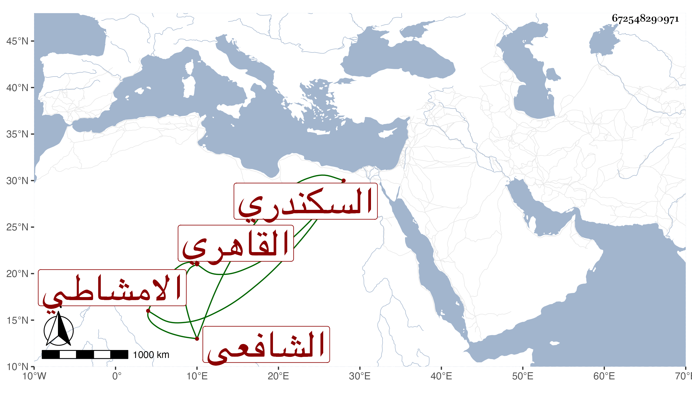

0902Sakhawi.DawLamic.ITO20230111-ara1.EIS1600.672548290971
Biography ID: 672548290971
643
عبد الغني بن أحمد بن محمد الزين السكندري ثم القاهري الشافعي الامشاطي عامي نزل المنكوتمرية وقتا وسمع على شيخنا وأخذ عن غيره حتى ألم بمسائل صار يرافع بها مع إظهار تدين واستغناء عن الناس بعمل الامشاط وتكرر مرافعته في أناس من ذوي الوجاهات كالسيد الكردي والعلمي بن الجيعان بل رام اغراء السلطان بالمباشرين للوظائف ممن لم يتصف بشروط الواقفين واسترجاها لبيت المال وأفتاه بعض الفساق بذلك فكففته عنه بل كفه الله بحيث ضربه السلطان وإن كان لغير هذا المقصد ولم يلبث أن مات في يوم الجمعة رابع جمادى الثانية سنة اثنتين وثمانين صبيحة توفي السيد الكردي عفا الله عنهما .
